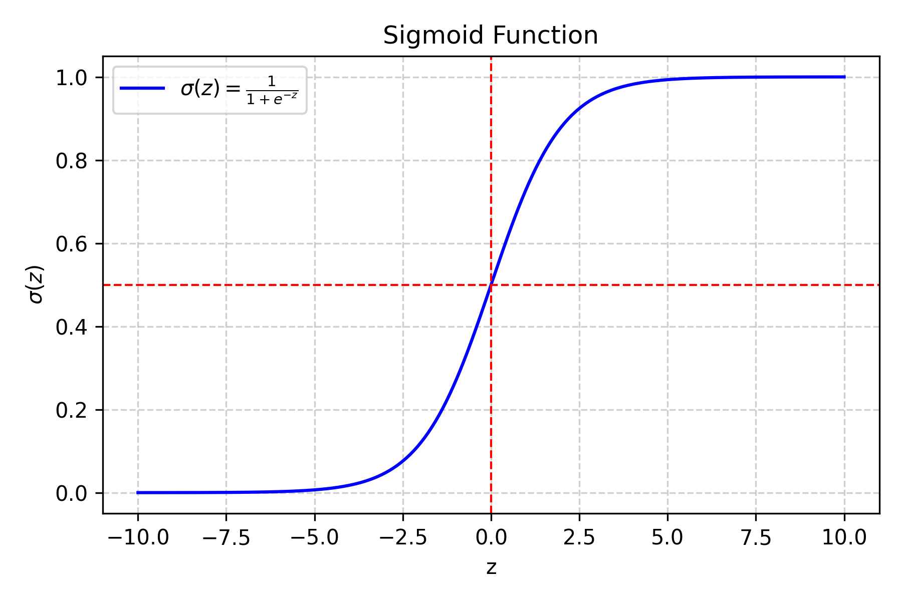

Jul 04, 2026 | 2975 words | 30 min read
7.1.2. Task 2#
Learning Objectives#
Understand the concept of binary logistic regression for classification.
Implement the sigmoid function and logistic regression prediction.
Train the model using gradient descent to minimize binary cross-entropy loss.
Evaluate performance using accuracy and error rate on train/val/test sets.
Introduction#
In this task, you will build and train a binary logistic regression model from scratch using NumPy to classify traffic signs as either:
Left turn ahead (label = 1)
Deer warning (label = 0)
The model will use the features you have extracted earlier (e.g., hue mean, hue standard
deviation, circle presence, number of lines, etc.) into img_features.csv.
You will implement the logistic regression algorithm, train it on the training set, and evaluate its performance on the validation and test sets.
The concept - What is Logistic Regression?#
Think of logistic regression as a way to make “yes/no” decisions based on multiple pieces of information. Instead of giving you a simple yes or no, it gives you a probability (a number between 0 and 1) that represents how confident it is about the answer. Then, you can choose a threshold (like 0.5) to convert that probability into a final decision.
How It Works Step-by-Step#
Step 1: Combine All Features (The Linear Part)#
First, we take all the features and combine them using weights (like importance scores) and a bias term. This gives us a single number (\(z\)) that represents the combined information from all features:
Breaking this down:
Each feature gets multiplied by a weight (\(w_1\), \(w_2\), etc.) where \(w_i \in \mathbb{R}\) (can be positive, negative, or zero).
The magnitudes of the weights tell us how important each feature is.
We add a scalar “bias” term (\(b\)) where \(b \in \mathbb{R}\). This bias can be thought of as the model’s default prediction when it has no information from the features.
The resulting “logit” or “score” (\(z\)) can be any real number (positive, negative, or zero). This is just a linear combination of the features and parameters, which is why it’s called the “linear” part of logistic regression.
Example with traffic signs: If we have three features like:
Hue mean = 0.6
Number of lines = 8
Big circle present = 1 (yes)
And if the weights are:
\(w_1 = 2.5\) (hue is very important)
\(w_2 = 0.8\) (lines matter somewhat)
\(w_3 = 1.2\) (circle presence is important)
\(b = -1.0\) (overall bias)
Then:
Step 2: Convert to Probability (The Sigmoid Function)#
The value \(z\) can be any real number, but we want a probability between 0 and 1 so that we can interpret it as the likelihood of class 1. This is where the sigmoid function is useful. It squashes any real number into the range \((0, 1)\):

Fig. 7.1 Sigmoid function#
What does this do?
If \(z\) is very large and positive, \(\sigma(z)\) approaches \(1\) (\(\qty{100}{\percent}\) probability)
If \(z\) is very large and negative, \(\sigma(z)\) approaches \(0\) (\(\qty{0}{\percent}\) probability)
If \(z = 0\), then \(\sigma(z) = 0.5\) (\(\qty{50}{\percent}\) probability)
Why the sigmoid function?
It is smooth and differentiable, which is required for gradient-based training.
It naturally maps any real number to the range \((0, 1)\).
Its S-shape is symmetric around \(0.5\), giving equivalent probability magnitudes for equal positive and negative \(z\) values.
Example:
If \(z = 8.1\) (from our traffic sign example):
\(\sigma(8.1) = 1/(1 + e^{-8.1}) = 1/(1 + 0.0003) \approx 0.9997\)
This means a \(\qty{99.97}{\percent}\) predicted probability of a left turn sign.
Step 3: Make the Final Decision#
If \(\sigma(z) \geq 0.5\), predict class 1 (left turn sign)
If \(\sigma(z) < 0.5\), predict class 0 (deer warning sign)
Understanding the Loss Function#
Why Do We Need a Loss Function?#
The loss function tells us how “wrong” our predictions are. Minimizing this loss value helps us make our model better. If we craft a differentiable loss function, we can use the gradient to tweak the parameters (weights and bias) and reduce this loss. By doing this repeatedly, we can minimize the loss and get a better model.
Since we’re dealing with probabilities, we use a specific loss function called binary cross-entropy loss (also known as log loss).
Binary Cross-Entropy Loss Explained#
For a Single Example#
The loss depends on the true label (\(y\)) and our predicted probability (\(\hat{y}\)):
Case 1: True label is 1 (left turn sign)
Predicting \(\hat{y} = 0.9\) (90% confident) gives low loss.
Predicting \(\hat{y} = 0.1\) (10% confident) gives high loss.
Case 2: True label is 0 (deer warning sign)
Predicting \(\hat{y} = 0.1\) (10% confident it is class 1) gives low loss.
Predicting \(\hat{y} = 0.9\) (90% confident it is class 1) gives high loss.
Mathematical Formula for a Single Example:
Why use the log function?
The log function grows very large as \(\hat{y}\) approaches \(0\) (for \(y=1\)) or \(1\) (for \(y=0\)), which heavily penalizes confident wrong predictions. Try this yourself with a calculator.
It provides a smooth gradient to work with during training.
Why the negative sign?
When \(\hat{y}\) is close to \(1\) and \(y = 1\), \(\log(\hat{y})\) is close to \(0\), so \(-\log(\hat{y})\) is close to \(0\) (low loss).
When \(\hat{y}\) is close to \(0\) and \(y = 1\), \(\log(\hat{y})\) is very negative, so \(-\log(\hat{y})\) is very large (high loss).
The negative sign ensures that better predictions give lower loss values.
Average Loss for All Examples#
Breaking this down:
\(L(w,b)\) is the average loss across all examples (a single real number). We write the parameters \((w, b)\) explicitly to emphasize that this loss depends on the current model weights and bias.
\(m\) is the number of examples.
\(\hat{y}^{(i)}\) is the predicted probability for example \(i\).
\(y^{(i)}\) is the true class label for example \(i\) (\(0\) or \(1\)).
For each example \(i\):
If \(y^{(i)} = 1\): contribute \(\log(\hat{y}^{(i)})\) to the sum.
If \(y^{(i)} = 0\): contribute \(\log(1 - \hat{y}^{(i)})\) to the sum.
The negative sign in front converts the (negative) log values into a positive loss.
The result is one number representing how well the current parameters fit the training data. The goal of training is to find \((w, b)\) that minimize this loss.
Note
The binary cross-entropy loss is also called “log loss” and is the standard loss function for binary classification problems. It heavily penalizes confident wrong predictions.
Notice how this loss function, when accumulated over all examples, does not need an if statement. Multiplication by \(0\) only adds one of the two individual loss terms.
Take a close look (inside the square parentheses) to understand why, for each example, one of the terms will be zero and the other will contribute to the loss.
Training with Gradient Descent - Step by Step#
What is Gradient Descent?#
Imagine you’re on a hill and want to get to the bottom. You look around to see which direction is downhill, take a step in that direction, and repeat. Gradient descent works the same way - it finds the direction that makes the loss smaller and moves in that direction.
The Training Process#
Step 1: Initialize Parameters#
Weights (\(w\)): Start with small random numbers (\([-0.1, 0.1]\)).
Why random? If all weights start at zero, every feature contributes equally and the model cannot break the symmetry during training.
Why small? Large initial values can cause the loss to oscillate and make training unstable.
Bias (\(b\)): Start at \(0\).
Why zero? Zero is a neutral starting point; the model will learn the appropriate offset during training.
Step 2: The Training Loop#
Repeat these steps for several iterations:
A. Make Predictions (Forward Pass)
Use the current \(w\) and \(b\) to compute \(\hat{y}\) for all examples:
(7.6)#\[\hat{y}^{(i)} = \sigma(w \cdot x^{(i)} + b)\]In this formula:
\(\hat{y}^{(i)}\) is the predicted probability for example \(i\), not the final class label.
\(w \cdot x^{(i)}\) is the dot product of the weight vector (shape \((n,)\)) and the feature vector for example \(i\) (shape \((n,)\)), producing a scalar.
Adding the bias term \(b\) gives the combined score, which the sigmoid function \(\sigma\) then converts to a probability.
For all examples at once, using matrix operations:
(7.7)#\[\hat{y} = \sigma(X \cdot w + b)\]In this formula:
\(X\) is the full feature matrix (shape \((m, n)\)).
\(w\) is the weight vector (shape \((n,)\)).
\(X \cdot w\) yields a vector of shape \((m,)\) containing the combined score for each example.
The scalar \(b\) is broadcast and added to every element.
Applying \(\sigma\) element-wise gives the predicted probability for every example.
This step is called the “forward pass” because data flows forward through the model to produce predictions.
B. Calculate Loss
Compute the loss for the current predictions using (7.5). The result is a single scalar representing how well the model fits the data with the current parameters.
C. Calculate Gradients (Backward Pass)
The gradient measures how much the loss changes when each parameter is adjusted slightly. Compute:
\(\frac{\partial L}{\partial w}\) is a vector with the same shape as \(w\) (shape \((n,)\)). Element \(j\) is the rate of change of the loss with respect to weight \(w_j\).
Since \(b\) is a scalar, \(\frac{\partial L}{\partial b}\) is also a scalar.
Symbol reference:
\(\frac{\partial L}{\partial w}\): rate of change of the loss with respect to each weight (vector, shape \((n,)\))
\(\frac{\partial L}{\partial b}\): rate of change of the loss with respect to the bias (scalar)
\(X^T\): transpose of the feature matrix (shape \((n, m)\))
\((\hat{y} - y)\): prediction error vector (shape \((m,)\))
Hint
These gradient formulas come from applying the chain rule of calculus; the full derivation is beyond the scope of this course. Intuitively, \((\hat{y} - y)\) is the prediction error for each example, and multiplying by \(X^T\) accumulates how much each feature contributed to that error across all examples.
D. Update Parameters Move in the direction that reduces the loss:
For each weight \(w_j\) where \(j \in \{1, 2, ..., n\}\):
\(w_j\) is the \(j\)-th weight (a scalar).
\(\frac{\partial L}{\partial w_j}\) is the \(j\)-th element of the gradient vector \(\frac{\partial L}{\partial w}\).
Update the bias similarly:
Note
In these update rules, the left side is the new value of the parameter and the right side is the old value minus a step in the direction of steepest descent. We subtract because the gradient points uphill; moving opposite to it reduces the loss. Imagine standing on a hillside: the gradient tells you which direction is steepest uphill, so you take a step in the opposite direction to go downhill. The learning rate \(\alpha\) controls the step size.
What is \(\alpha\) (alpha)?
This is the learning rate: the step size taken per iteration.
Use \(\alpha = 0.01\) for your submission. You may experiment with other values, but document your choice and reasoning in your report.
Warning
If the learning rate is too high, the loss may oscillate or diverge. If it is too low, training will be very slow. Start with \(0.01\) and adjust based on the loss curve.
Step 3: When to Stop Training#
Common stopping criteria:
Maximum iterations reached: the most common criterion for simplicity
Loss change is below a threshold: no meaningful improvement
Loss is sufficiently small: model is already accurate enough
For this task, use only the first criterion (fixed number of iterations). Set the iteration count to 5000 for your final submission.
Evaluation Metrics - How Good is Our Model?#
Accuracy#
What’s a good accuracy?
Random guessing: \(\qty{50}{\percent}\) (for binary classification)
Good model: \(\qty{80}{\percent}+\)
Excellent model: \(\qty{90}{\percent}+\)
Error Rate#
Why Both Metrics?#
Accuracy tells us what we’re doing right
Error rate tells us what we’re doing wrong
Sometimes one is more intuitive than the other
Task Instructions#
Deliverable Reminder
Create a flowchart of your algorithm and save it as tp3_team_2_teamnumber.pdf. Save your program as tp3_team_2_teamnumber.py.
Note
For the functions described below, the order of arguments and outputs matter.
This task has a lot of detailed instructions. Read them carefully.
Step 1: Sigmoid Function#
Create a function named calculate_sigmoid.
Arguments:
z(scalar or NumPy array of floats): Input value(s) to apply the sigmoid to.
Returns:
result(float or NumPy array of floats): Probability value(s) in the range \((0, 1)\), same shape asz.
The sigmoid function is defined as:
Note
Use
np.exp()for \(e^z\).Very large or very small \(z\) values can cause overflow. Use
np.clip()to restrict \(z\) to the range \([-10, 10]\).
Step 2: Predict Probabilities#
Create a function named predict_proba.
Arguments:
X(2D NumPy array of floats, shape(m, n)): Feature matrix, where \(m\) is the number of examples and \(n\) is the number of features.w(1D NumPy array of floats, shape(n,)): Weight vector.b(float): Bias.
Returns:
probabilities(1D NumPy array of floats, shape(m,)): Predicted probability for each example.
Compute the \(z\) values using (7.7) with matrix dot multiplication.
Apply the sigmoid to each \(z\) value.
Return the probabilities as a 1D NumPy array of shape \((m,)\).
What is matrix dot multiplication?
Matrix dot multiplication lets us compute \(z\) for all examples simultaneously instead of looping. Consider \(X\) of shape \((5, 3)\) (5 examples, 3 features) and \(w\) of shape \((3,)\). The product \(X \cdot w\) is a vector of shape \((5,)\) containing one score per example, before the sigmoid is applied.
Let’s say we have:
Then the combined score vector \(z\) would be calculated as:
Hint
Use
np.dot()or the@operator for dot multiplication.Check dimensions: \(X\) is \((m, n)\), \(w\) is \((n,)\), result is \((m,)\).
\(b\) is a scalar and will be broadcast automatically.
Note
There is an important difference between a NumPy array of shape \((m,)\) and one of shape \((m, 1)\).
Shape \((m,)\) is a 1D array. This is the expected output of
predict_proba.Shape \((m, 1)\) is a 2D column vector. Returning this instead of a 1D array can cause shape-mismatch errors in downstream operations that rely on broadcasting.
Step 3: Predict Labels#
Create a function named predict_labels.
Arguments:
X(2D NumPy array of floats, shape(m, n)): Feature matrix.w(1D NumPy array of floats, shape(n,)): Weight vector.b(float): Bias.threshold(float, default \(0.5\)): Decision threshold.
Returns:
predicted_labels(1D NumPy array of ints, shape(m,)): Predicted class labels (\(0\) or \(1\)).
Compute the probability array using
predict_proba.Compare each probability to
threshold.Assign \(1\) where probability \(\geq\) threshold, \(0\) otherwise.
Hint
Use the
>=operator to produce a boolean array.Convert to integers with
.astype(int).Adjusting
thresholdshifts the decision boundary between classes.
Step 4: Compute Loss and Gradients#
Create a function named compute_loss_and_grads.
Arguments:
X(2D NumPy array of floats, shape(m, n)): Feature matrix.y(1D NumPy array of ints, shape(m,)): True labels.w(1D NumPy array of floats, shape(n,)): Current weight vector.b(float): Current bias.
Returns:
loss(float): Scalar training loss.dw(1D NumPy array of floats, shape(n,)): Gradient with respect tow.db(float): Gradient with respect tob.
Compute \(\hat{y}\) using
predict_proba.Compute the loss using (7.5).
Return all three values.
Hint
\(\log(0)\) is undefined. Before taking the log, clip predictions to \([\epsilon,\, 1 - \epsilon]\) where \(\epsilon = 10^{-15}\) using
np.clip(). This ensures \(\log(\hat{y}^{(i)})\) and \(\log(1 - \hat{y}^{(i)})\) are always finite.Use
np.mean()to average the per-example losses ((7.5)).Use
np.sum()for the bias gradient ((7.9)).Use
X.Tand matrix dot multiplication for the weight gradient ((7.8)).
Step 5: Train Logistic Regression#
Create a function named train_logistic_regression.
Arguments:
X_train(2D NumPy array of floats): Training feature matrix.y_train(1D NumPy array of ints): Training labels.X_val(2D NumPy array of floats): Validation feature matrix.y_val(1D NumPy array of ints): Validation labels.learning_rate(float): Step size for gradient descent.num_iterations(int): Number of training iterations.
Returns:
w_best(1D NumPy array of floats): Weight vector with lowest validation loss.b_best(float): Bias with lowest validation loss.loss_history(list of float): Training loss at each iteration.val_loss_history(list of float): Validation loss at each iteration.
Initialize w and b (see Step 1: Initialize Parameters for why and how)
Initialize two empty lists to store training and validation loss history
For each of
num_iterationsiterations:Compute the training loss and gradients using
compute_loss_and_grads.Update \(w\) and \(b\) using the gradient descent equations (see Step 2: The Training Loop).
Append the training loss to
loss_history.Compute validation loss with
compute_loss_and_grads(X_val, y_val, w, b)(discard the gradients) and append toval_loss_history.If this iteration’s validation loss is the lowest seen so far, save \(w\) and \(b\) as \(w_{\text{best}}\) and \(b_{\text{best}}\).
Print the loss at the start and every \(100\) iterations to monitor progress.
Return the best parameters and both loss history lists.
Note
We choose the parameters that minimize validation loss to prevent overfitting to the training data. That is, we want to find the parameters that not only perform well on the training data but also generalize well to unseen data (validation set). By monitoring the validation loss, we can identify the point at which our model starts to overfit (when validation loss starts to increase) and select the parameters that correspond to the lowest validation loss as our final model parameters.
Hint
Use
np.random.randn(n_features) * 0.01to initialize weights with small random values.Store loss after each iteration to monitor progress.
When updating the parameters, use the gradients calculated from the training data, not the validation data.
Use the validation loss to determine the best parameters, not the training loss.
Step 6: Evaluate Logistic Regression#
Create a function named evaluate_logistic_regression.
Arguments:
X(2D NumPy array of floats): Feature matrix.y(1D NumPy array of ints): True labels.w(1D NumPy array of floats): Trained weight vector.b(float): Trained bias.
Returns:
accuracy(float): Proportion of correct predictions.error_rate(float): Proportion of incorrect predictions.
Use
predict_labelsto get predictions with a threshold of \(0.5\).If you wish to use the default threshold of \(0.5\), you can simply call
predict_labels(X, w, b)without passing the threshold argument, as it will default to \(0.5\).
Calculate accuracy and error rate using
calculate_metrics(which you implemented in the previous task).Return the results.
Step 7: Main Function#
Create a main function that runs the entire data loading, training,
and evaluation process.
Ask the user to input the path to the feature dataset (e.g.,
img_features.csv), if they wish to shuffle the data, and the seed for the shuffle.Use
np.random.seed(seed)inside the main function to ensure reproducibility for the autograder.
Load the dataset using
load_datasetand display the shapes for features and labels.Split the dataset into training, validation, and test sets using
train_val_test_split. Display the sizes of each set.Set the learning rate to \(0.01\) and the number of iterations to \(5000\).
Train the logistic regression model using
train_logistic_regressionEvaluate the trained model on the training, validation, and test sets using
evaluate_logistic_regressionand report the accuracy and error rates (as percentages) for each set up to \(2\) decimal places.Report the final parameters (weights and bias) and training loss of the model.
Display the feature importance by showing the absolute values of the weights for each feature.
Note
You will need the functions developed in Section 7.1.1. Copy them into your program.
load_dataset: load the complete datasettrain_val_test_split: split into train/val/test setsscale_features: standardize the featurescalculate_metrics: calculate accuracy and error rate
Implementation Notes#
Hyperparameter Tuning#
Number of iterations:
Start with \(500\) to \(1000\) iterations and confirm the loss decreases before running a full \(5000\)-iteration training run. This saves time during debugging.
Remember to set the iteration count to \(5000\) for your final submission.
Monitoring Training Progress#
Observation |
Likely cause |
|---|---|
Loss decreases steadily |
Training is working correctly |
Loss increases |
Learning rate is too high |
Loss plateaus early |
Learning rate is too low, or more iterations are needed |
Loss oscillates |
Learning rate is too high |
Common Pitfalls and Solutions#
Problem: Loss becomes NaN.
Solution: Check for \(\log(0)\) in the loss calculation and overflow in the
sigmoid. Make sure you are using np.clip() in both places.
Problem: Training is very slow. Solution: Make sure you are using NumPy vectorized operations instead of Python loops, and that features are properly scaled before training.
Warning
If your loss becomes NaN or infinity, immediately check your sigmoid function and gradient calculations. This usually indicates a numerical overflow or division by zero.
Debugging Your Implementation#
Simple Test Cases#
Sigmoid function:
sigmoid(\(0\)) should equal \(0.5\)
sigmoid(very large positive) should be close to \(1\)
sigmoid(very large negative) should be close to \(0\)
Predictions:
With all-zero weights and bias, all predictions should be \(0.5\)
With very large positive weights, predictions should be close to \(1\)
Loss calculation:
Perfect predictions should give loss close to \(0\)
Random predictions should give loss around \(0.69\)
Sanity Checks#
Loss should decrease during training
Final accuracy should be better than random guessing (\(\qty{50}{\percent}\))
Weights should not be all zero after training
Sample Output#
Use the values in Table 7.5 below to test your program.
Case |
dataset |
shuffle |
seed |
|---|---|---|---|
1 |
img_features.csv |
no |
42 |
2 |
img_features.csv |
yes |
42 |
Ensure your program’s output matches the provided samples exactly. This includes all characters, white space, and punctuation. In the samples, user input is highlighted like this for clarity, but your program should not highlight user input in this way.
Case 1 Sample Output
$ python3 tp3_team_2_teamnumber.py Enter the path to the feature dataset: img_features.csv Shuffle the dataset? (yes/no): no Enter a seed for loading the dataset: 42
Features shape: (1080, 9) Labels shape: (1080,) Data loaded and split into
Training set: size: 864 Validation set: size: 108 Test set: size: 108
Training logistic regression model with learning rate = 0.01 and num_iterations = 5000...
Iteration 0, Train Loss: 0.6802, Val Loss: 0.6716 Iteration 100, Train Loss: 0.3697, Val Loss: 0.3483 Iteration 200, Train Loss: 0.2919, Val Loss: 0.2791 Iteration 300, Train Loss: 0.2581, Val Loss: 0.2572 Iteration 400, Train Loss: 0.2388, Val Loss: 0.2511 Iteration 500, Train Loss: 0.2260, Val Loss: 0.2518 Iteration 600, Train Loss: 0.2168, Val Loss: 0.2559 Iteration 700, Train Loss: 0.2097, Val Loss: 0.2617 Iteration 800, Train Loss: 0.2042, Val Loss: 0.2683 Iteration 900, Train Loss: 0.1997, Val Loss: 0.2753 Iteration 1000, Train Loss: 0.1960, Val Loss: 0.2824 Iteration 1100, Train Loss: 0.1928, Val Loss: 0.2893 Iteration 1200, Train Loss: 0.1902, Val Loss: 0.2960 Iteration 1300, Train Loss: 0.1880, Val Loss: 0.3024 Iteration 1400, Train Loss: 0.1860, Val Loss: 0.3086 Iteration 1500, Train Loss: 0.1843, Val Loss: 0.3144 Iteration 1600, Train Loss: 0.1828, Val Loss: 0.3199 Iteration 1700, Train Loss: 0.1815, Val Loss: 0.3252 Iteration 1800, Train Loss: 0.1804, Val Loss: 0.3301 Iteration 1900, Train Loss: 0.1793, Val Loss: 0.3348 Iteration 2000, Train Loss: 0.1784, Val Loss: 0.3392 Iteration 2100, Train Loss: 0.1776, Val Loss: 0.3434 Iteration 2200, Train Loss: 0.1768, Val Loss: 0.3474 Iteration 2300, Train Loss: 0.1761, Val Loss: 0.3511 Iteration 2400, Train Loss: 0.1755, Val Loss: 0.3547 Iteration 2500, Train Loss: 0.1749, Val Loss: 0.3581 Iteration 2600, Train Loss: 0.1744, Val Loss: 0.3614 Iteration 2700, Train Loss: 0.1739, Val Loss: 0.3644 Iteration 2800, Train Loss: 0.1735, Val Loss: 0.3674 Iteration 2900, Train Loss: 0.1731, Val Loss: 0.3702 Iteration 3000, Train Loss: 0.1727, Val Loss: 0.3728 Iteration 3100, Train Loss: 0.1724, Val Loss: 0.3754 Iteration 3200, Train Loss: 0.1720, Val Loss: 0.3778 Iteration 3300, Train Loss: 0.1717, Val Loss: 0.3801 Iteration 3400, Train Loss: 0.1715, Val Loss: 0.3824 Iteration 3500, Train Loss: 0.1712, Val Loss: 0.3845 Iteration 3600, Train Loss: 0.1709, Val Loss: 0.3865 Iteration 3700, Train Loss: 0.1707, Val Loss: 0.3885 Iteration 3800, Train Loss: 0.1705, Val Loss: 0.3904 Iteration 3900, Train Loss: 0.1703, Val Loss: 0.3922 Iteration 4000, Train Loss: 0.1701, Val Loss: 0.3939 Iteration 4100, Train Loss: 0.1699, Val Loss: 0.3956 Iteration 4200, Train Loss: 0.1697, Val Loss: 0.3972 Iteration 4300, Train Loss: 0.1696, Val Loss: 0.3987 Iteration 4400, Train Loss: 0.1694, Val Loss: 0.4002 Iteration 4500, Train Loss: 0.1693, Val Loss: 0.4016 Iteration 4600, Train Loss: 0.1691, Val Loss: 0.4030 Iteration 4700, Train Loss: 0.1690, Val Loss: 0.4043 Iteration 4800, Train Loss: 0.1688, Val Loss: 0.4056 Iteration 4900, Train Loss: 0.1687, Val Loss: 0.4068
Final Model Evaluation with the best parameters: -------------------------------------------------- Training Set - Accuracy: 91.78%, Error Rate: 8.22% Validation Set - Accuracy: 90.74%, Error Rate: 9.26% Test Set - Accuracy: 94.44%, Error Rate: 5.56%
Final Parameters: Weights shape: (9,) Bias: 0.102294 Final training loss: 0.168603
Feature Importance (absolute weight values): Feature 0: 0.470950 Feature 1: 0.005004 Feature 2: 0.532263 Feature 3: 0.345537 Feature 4: 0.331293 Feature 5: 0.421790 Feature 6: 0.344842 Feature 7: 0.437110 Feature 8: 0.404324
Case 2 Sample Output
$ python3 tp3_team_2_teamnumber.py Enter the path to the feature dataset: img_features.csv Shuffle the dataset? (yes/no): yes Enter a seed for loading the dataset: 42
Features shape: (1080, 9) Labels shape: (1080,) Data loaded and split into
Training set: size: 864 Validation set: size: 108 Test set: size: 108
Training logistic regression model with learning rate = 0.01 and num_iterations = 5000...
Iteration 0, Train Loss: 0.6960, Val Loss: 0.6880 Iteration 100, Train Loss: 0.3690, Val Loss: 0.3350 Iteration 200, Train Loss: 0.2940, Val Loss: 0.2539 Iteration 300, Train Loss: 0.2635, Val Loss: 0.2207 Iteration 400, Train Loss: 0.2471, Val Loss: 0.2027 Iteration 500, Train Loss: 0.2368, Val Loss: 0.1913 Iteration 600, Train Loss: 0.2296, Val Loss: 0.1833 Iteration 700, Train Loss: 0.2244, Val Loss: 0.1773 Iteration 800, Train Loss: 0.2204, Val Loss: 0.1726 Iteration 900, Train Loss: 0.2172, Val Loss: 0.1689 Iteration 1000, Train Loss: 0.2146, Val Loss: 0.1658 Iteration 1100, Train Loss: 0.2124, Val Loss: 0.1632 Iteration 1200, Train Loss: 0.2106, Val Loss: 0.1610 Iteration 1300, Train Loss: 0.2091, Val Loss: 0.1591 Iteration 1400, Train Loss: 0.2077, Val Loss: 0.1574 Iteration 1500, Train Loss: 0.2065, Val Loss: 0.1559 Iteration 1600, Train Loss: 0.2055, Val Loss: 0.1546 Iteration 1700, Train Loss: 0.2046, Val Loss: 0.1534 Iteration 1800, Train Loss: 0.2038, Val Loss: 0.1524 Iteration 1900, Train Loss: 0.2030, Val Loss: 0.1514 Iteration 2000, Train Loss: 0.2023, Val Loss: 0.1506 Iteration 2100, Train Loss: 0.2017, Val Loss: 0.1498 Iteration 2200, Train Loss: 0.2012, Val Loss: 0.1491 Iteration 2300, Train Loss: 0.2007, Val Loss: 0.1484 Iteration 2400, Train Loss: 0.2002, Val Loss: 0.1478 Iteration 2500, Train Loss: 0.1997, Val Loss: 0.1473 Iteration 2600, Train Loss: 0.1993, Val Loss: 0.1467 Iteration 2700, Train Loss: 0.1989, Val Loss: 0.1463 Iteration 2800, Train Loss: 0.1986, Val Loss: 0.1458 Iteration 2900, Train Loss: 0.1982, Val Loss: 0.1454 Iteration 3000, Train Loss: 0.1979, Val Loss: 0.1450 Iteration 3100, Train Loss: 0.1976, Val Loss: 0.1447 Iteration 3200, Train Loss: 0.1973, Val Loss: 0.1443 Iteration 3300, Train Loss: 0.1970, Val Loss: 0.1440 Iteration 3400, Train Loss: 0.1968, Val Loss: 0.1437 Iteration 3500, Train Loss: 0.1965, Val Loss: 0.1434 Iteration 3600, Train Loss: 0.1963, Val Loss: 0.1431 Iteration 3700, Train Loss: 0.1961, Val Loss: 0.1429 Iteration 3800, Train Loss: 0.1959, Val Loss: 0.1426 Iteration 3900, Train Loss: 0.1957, Val Loss: 0.1424 Iteration 4000, Train Loss: 0.1955, Val Loss: 0.1422 Iteration 4100, Train Loss: 0.1953, Val Loss: 0.1420 Iteration 4200, Train Loss: 0.1951, Val Loss: 0.1418 Iteration 4300, Train Loss: 0.1949, Val Loss: 0.1416 Iteration 4400, Train Loss: 0.1948, Val Loss: 0.1414 Iteration 4500, Train Loss: 0.1946, Val Loss: 0.1412 Iteration 4600, Train Loss: 0.1945, Val Loss: 0.1411 Iteration 4700, Train Loss: 0.1943, Val Loss: 0.1409 Iteration 4800, Train Loss: 0.1942, Val Loss: 0.1408 Iteration 4900, Train Loss: 0.1940, Val Loss: 0.1406
Final Model Evaluation with the best parameters: -------------------------------------------------- Training Set - Accuracy: 90.86%, Error Rate: 9.14% Validation Set - Accuracy: 94.44%, Error Rate: 5.56% Test Set - Accuracy: 90.74%, Error Rate: 9.26%
Final Parameters: Weights shape: (9,) Bias: 0.556383 Final training loss: 0.193887
Feature Importance (absolute weight values): Feature 0: 0.787800 Feature 1: 0.246556 Feature 2: 0.625844 Feature 3: 0.596205 Feature 4: 0.729823 Feature 5: 0.699014 Feature 6: 0.621271 Feature 7: 0.964680 Feature 8: 0.936781
Deliverables |
Description |
|---|---|
tp3_team_2_teamnumber.pdf |
Flowchart(s) for this task. |
tp3_team_2_teamnumber.py |
Your completed Python code. |